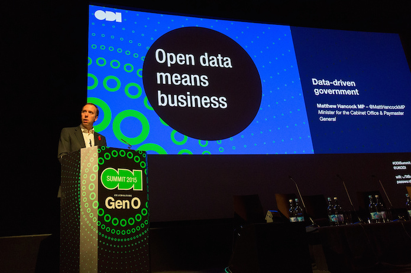

Gavin Starks calls on businesses and "everyone innovating with data" to join an open conversation with government to help ensure the new data programme will maintain the strong data infrastructure that our digital economy so badly needs

Matt Hancock MP calling for input from diverse data users at the ODI Summit. Photo: ODI
Editor's note: This is an updated version of the blog originally posted on 24 November 2015, which was outdated and published in error.
The UK Cabinet Office has asked the ODI, in a recent speech, to connect businesses, startups and innovators to government around data across the whole data spectrum.
In an age where data underpins so much of our society and our economy, we want to ensure that these connections are broad and deep.
Our mission at the Open Data Institute is to connect, equip and inspire people around the world to innovate with data.
The conversation between the Government Data Programme and data users must include a diverse set of voices and a range of organisations representing different views, priorities and cultures.
At the ODI, we benefit from having a range of influences that help shape our plans and opinions, including evidence from our programmes and open conversations with our global network.
Open conversations are essential for learning about what works and what doesn’t, for open policymaking, and for open innovation.
Perhaps unsurprisingly, we believe that there should be an open conversation in connecting government with data users of many kinds, that processes of communication should be as transparent as is practical and that relevant outputs, reports and publications should be open by default.
Innovators and startups know that the fastest way to good service development is through direct engagement with their users. We will facilitate the part of the conversation between the business community and government. Each are trying to address the same challenges, and we believe that collaboration will help them to solve problems and improve services much faster.
ODI will help businesses understand the user need of government, and government understand the user need of business, around data.
Our data infrastructure is essential to our digital economy, and so much of our data infrastructure is maintained by government. We need the new Data Programme to succeed. We need government to provide strong leadership to keep open data open and invest in quality data publication. We all need to keep our expectations high, ask for what we need, and hold the Cabinet Office to its promises.
As part of our work, from our members and startups and through training and events, we hear a lot from companies about their experience with data from across the spectrum of closed, shared and open, and the effect that government data policies have on them.
The UK Government has said that it wants to hear all voices.
The explicit request from the Cabinet Office to keep challenging it and push its progress around data reflects what we are told in all of our discussions across the public sector, by central government departments, local authorities and regulators. And everyone innovating with data needs to have their say in strengthening our data infrastructure.
We will be inviting representatives from the Cabinet Office Data Programme team to events organised by ODI HQ and our UK-based ODI Nodes. This includes ODI Connect, business breakfasts and of course our ODI Summit, so that they can hear from and talk with those outside government around data issues.
We have asked the Cabinet Office to send a speaker at least every quarter to give Friday lunchtime lectures to share what the Data Programme is doing and give a chance for attendees and listeners to pose their questions directly. The lectures are open to everyone.
We will also cross-post and promote blogs from the Data Blog onto our site. ODI Members who want to be informed of the latest news and relevant consultations from government will be kept up-to-date and encouraged to respond (and of course we will tweet about them). This will help ensure there is an active voice from the data community across all policy areas in what is increasingly a data-driven government.
These initiatives should complement other engagement activities that the Cabinet Office undertakes with the data community.
Meanwhile, our priorities are to focus on:
government’s role in managing the UK’s data infrastructure, including considering it as part of the new National Infrastructure Commission led by Lord Adonis
ensuring government learns the lessons from its loss of control of the Postcode Address File with the sale of Royal Mail, and does not repeat the same mistake in any upcoming privatisations
embedding an inclusive, ethical and user-oriented approach into government’s approach to personal data
Promoting data innovation across sectors
Along with our community of ODI Members and wider global network, we work across sector-based themes to focus and prioritise activity around specific challenges. Themes currently include finance, agriculture and nutrition, global development and open cities. These themes will expand in 2016. Together, we connect people and organisations, and help develop solutions.
Have your say
How would you like to connect with the Data Programme? What kind of process do you think would work best for feeding issues and ideas to the Cabinet Office team? Comment on this blog, tweet us at @ODIHQ or email [email protected] to let us know your thoughts.
Keep abreast of developments in this area
Do you want to be informed about upcoming government consultations as an ODI Member? Join our community of individuals and organisations.
Are you a representative of another government that would like to set up a similar initiative?
We actively support global efforts around data, through dedicated projects and via our global network of ODI Node franchises. If you would like to work with the ODI to create similar initiatives, please contact [email protected].
Gavin Starks is CEO at the ODI. Follow @agentGav on Twitter.